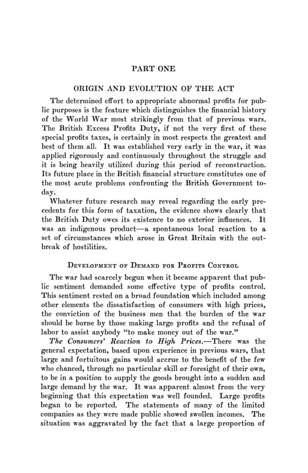

Haig, 1920: como os britânicos tributaram os lucros de guerra
Leitura: 9 min
O relatório de Haig descreve a origem, as regras, a administração e a receita do imposto britânico sobre lucros de 1915 e tira dele lições para a revisão do imposto americano.


Em junho de 1915, um ministro britânico explicou na Câmara dos Comuns por que o imposto sobre lucros de guerra ainda não tinha sido apresentado: o governo queria um projeto à prova de vazamentos. Seis meses depois, em 23 de dezembro, a lei estava aprovada. Cinco anos depois, tinha rendido quase um bilhão de libras, e Robert Murray Haig, da Columbia University, atravessou o Atlântico para descobrir como os britânicos tinham conseguido aquilo que, nos Estados Unidos, ameaçava desmoronar.
O relatório, publicado como suplemento da American Economic Review em dezembro de 1920, foi preparado para a Comissão de Finanças de Guerra da American Economic Association, com a colaboração do advogado George E. Holmes. Haig passou de 20 de julho a 29 de agosto de 1919 na Inglaterra, ouvindo funcionários do Inland Revenue, contadores e empresários, estes quase sempre sob a condição de não serem citados.
De onde veio o imposto?
Para Haig, o imposto foi um produto local, uma reação espontânea às circunstâncias da guerra, não uma importação. Três sentimentos o sustentaram. Os consumidores viam fortunas nascerem da alta de alimentos e roupas; um moinho de farinha que anunciou um grande aumento de lucros, desculpando-se por ter sido obra do acaso, teria inflamado a opinião. Os empresários que lutavam para sobreviver não tinham simpatia pelos que lucravam além do normal. E os trabalhadores, decisivos para a produção de guerra, só cooperariam se seu esforço não virasse lucro dos donos das fábricas.
Antes do imposto geral veio o Munitions Levy, criado pela lei de munições de 2 de julho de 1915. O ministro das munições podia declarar controlado qualquer estabelecimento que trabalhasse para a guerra, e o lucro desses estabelecimentos ficava limitado a 120% da média dos dois anos anteriores ao conflito; o excedente ia para o Tesouro. O levy foi absorvido pelo imposto geral em 1917. O Excess Profits Duty entrou no orçamento de Reginald McKenna de 21 de setembro de 1915, com desenho atribuído a J. C. Stamp, do Inland Revenue.
O que era um lucro excessivo para a lei?
A lei, de menos de dez páginas, alcançava todos os negócios, fossem de pessoas físicas, sociedades ou empresas, com três exceções: a agricultura, os salários e as profissões liberais. Não perguntava se o lucro adicional vinha da guerra. Todo aumento sobre o padrão de pré-guerra era tratado como excessivo. Haig corrige um engano comum nos Estados Unidos: o padrão britânico não era só a média dos lucros de antes da guerra. Era uma alternativa entre essa média, de dois dos três últimos anos escolhidos pelo contribuinte, e uma porcentagem legal sobre o capital investido, valendo a que fosse mais favorável a ele.
O cálculo do lucro seguia os princípios do imposto de renda, com ajustes. Excluíam-se as rendas de investimentos e a valorização de ativos, salvo os estoques, porque o tributo queria atingir o lucro da atividade comercial. Usava-se o lucro efetivo do período, e não a média de três anos do imposto de renda. Os contratos longos eram repartidos pelos períodos de execução. E, se nos anos seguintes os lucros caíssem abaixo do padrão, o contribuinte recebia de volta o necessário para que o total pago correspondesse ao período inteiro.
A definição de capital investido também diferia da americana. Os britânicos partiam do ativo: o valor original dos bens, menos perdas e depreciação. Os americanos partiam do capital social integralizado, que não diminuía com prejuízos. No exemplo de Haig, quem pôs US$ 100 mil numa empresa em 1900 e perdeu US$ 50 mil em vinte anos teria em 1920 capital investido de US$ 100 mil nos Estados Unidos e de US$ 50 mil na Inglaterra.
Como as alíquotas e a lei mudaram?
A alíquota começou em 50%. Em 1916, McKenna a elevou a 60%; em 1917, Bonar Law a levou a 80%, e a proposta foi recebida com aplausos na Câmara. Haig relata que houve promessa de chegar a 100% e que só os protestos dos funcionários do fisco, para quem o plano inteiro desabaria, impediram a medida. A maior parte dos abusos posteriores, escreve, pode ser atribuída à alíquota de 1917.
Em 1918, uma emenda passou a tributar a venda de estoques fora do curso normal do comércio, depois que vendas em bloco de uísque na Escócia tinham escapado do imposto. Em 1919, com a guerra terminada, a alíquota caiu para 40%. Em 1920, Austen Chamberlain surpreendeu o país pedindo mais um ano, a 60%. Fora das alíquotas, conclui Haig, a lei mudou pouco, e essa estabilidade explica parte do êxito da administração.
Como o fisco administrava o imposto?
O que mais impressionou Haig foi o peso dado à administração. O imposto só foi criado quando havia garantia de que o Inland Revenue poderia aplicá-lo, e a lei dava aos comissários poder de ajuste em quase vinte pontos. O contribuinte quase não tinha cálculo a fazer: o fiscal local já tinha os dados e, nos casos difíceis, ajudava a chegar a um acordo. Segundo os funcionários, cerca de 80% dos lançamentos acabavam feitos pelo padrão de lucros, e o imposto foi aplicado sem ampliar o quadro regular, exceto em pessoal de escritório.
Os recursos sobre a porcentagem legal iam ao Board of Referees, formado por um ou dois juristas, cerca de doze contadores e doze empresários de vários ramos e regiões, sem salário, com uma ajuda de custo diária. Em março de 1917, tinha 28 membros. Para Haig, essa arbitragem por pessoas de fora do fisco, tradicional no imposto de renda britânico, é a peça que mais falta ao sistema americano, onde os casos anormais eram decididos por comparação com empresas representativas cujos nomes o contribuinte não conhecia.
Quanto rendeu e a que custo?
Em cinco anos fiscais, o imposto rendeu £ 935,3 milhões, 24,3% de toda a receita britânica. Mas lembra que, nos contratos públicos dos primeiros anos, o imposto entrava no preço, de modo que parte da receita era o governo pagando a si mesmo.
Os efeitos econômicos são relatados como opiniões. Não houve falências atribuídas ao imposto, em parte porque o Tesouro adiava cobranças e os preços subiam; mas reservas deixaram de ser formadas. Stanley Baldwin, do Tesouro, admitiu que ele estimulava descuido nos gastos, porque salários e despesas saíam, em boa parte, do bolso do governo.
“Em tempos como estes, olha-se o estoque pelo lado errado do telescópio.” (“In times such as these, one views his stocks through the wrong end of the telescope.”)
Por que os britânicos não o tornaram permanente?
Em 1919, o Tesouro chegou a preparar um imposto permanente sobre lucros, de tipo americano, com alíquotas progressivas sobre o retorno do capital investido, e Chamberlain mandou uma missão estudar os impostos dos Estados Unidos e do Canadá. A reação dos empresários foi violenta. Em abril de 1920, o governo propôs, em vez disso, manter o imposto antigo a 60% e criar um imposto de um xelim por libra, isto é, 5%, sobre os lucros das sociedades de responsabilidade limitada, com receita estimada em £ 60 milhões num ano completo.
A razão oficial era a dificuldade de avaliar o capital das empresas. Haig acrescenta outra, colhida nas conversas: os empresários temiam menos o critério do capital que a permanência. Um imposto temporário, com padrão de pré-guerra, carregava em si o argumento para sua revogação; um imposto permanente ficaria pronto para um eventual governo trabalhista.
O que os Estados Unidos deveriam aprender?
As conclusões apontam três defeitos americanos. O primeiro é a pressa legislativa: os britânicos fizeram em 1915 uma lei que quase não precisou de revisão, enquanto os americanos trocaram de base e de critério três vezes em três anos. O segundo é o período contábil estreito, que isola cada ano e ignora prejuízos posteriores. O terceiro é a subestimação da administração.
“Não podemos ter tributação justa nas condições complexas da vida econômica moderna” (“We cannot have just taxation under the complicated conditions of modern economic life”)
A frase termina com uma condição: que o país se mostre capaz de criar um serviço público qualificado e permanente. Haig não recomenda revogar nem manter o imposto americano. Diz que, se ele continuar, deve conservar o critério do capital investido, e que o sistema de recursos a árbitros independentes deveria ser adotado em qualquer caso.
Na minha leitura
Na minha leitura, o relatório mostra que a definição do lucro normal é uma escolha legal, e não um dado. O padrão britânico, alternativo e favorável ao contribuinte, funcionava como cláusula de alívio; o americano, mais rígido, gerava os casos anormais que a administração depois não sabia resolver. A devolução em anos de prejuízo trata a empresa como uma sequência de anos, e não como uma série de exercícios isolados.
O outro ponto é o custo de uma alíquota marginal alta. Com 80% mais o imposto de renda, qualquer despesa que rendesse no futuro valia mais que o lucro presente, e o relato de Haig sobre publicidade, bônus e estoques subavaliados é a descrição empírica desse incentivo.
Glossário
- Excess Profits Duty
- imposto britânico sobre o lucro que excedia um padrão de antes da guerra.
- Estabelecimento controlado
- fábrica de munições sob controle do governo, sujeita ao Munitions Levy.
- Padrão de lucros
- média do lucro de dois dos três últimos anos antes da guerra, à escolha do contribuinte.
- Capital investido
- base sobre a qual se aplica a porcentagem legal para definir o lucro normal.
- Período contábil
- intervalo de apuração do lucro; o britânico admitia compensar anos ruins com anos bons.
- Board of Referees
- comissão de juristas, contadores e empresários que julgava recursos.
Fontes
- The Taxation of Excess Profits in Great Britain — Robert Murray Haig (Columbia University), com a colaboração de George E. Holmes (pp. 3–229). JSTOR · Internet Archive (PDF)
- Edição completa, com os demais artigos: Nº 166 do Arquivo.
Documento em domínio público (EUA, publicado antes de 1931), via JSTOR Early Journal Content e Internet Archive. Resumo e comentário do autor deste site, sem afiliação com a American Economic Association. Encontrou um erro? Escreva: a correção é publicada no próprio texto, com data.
↑ Nº 166 · Lucros extraordinários: o que a Grã-Bretanha ensinou, 1915–1920